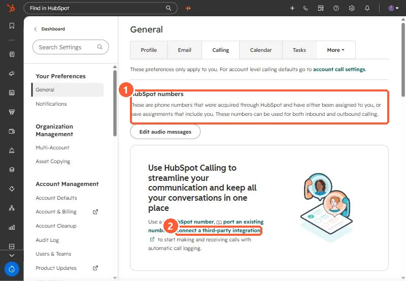
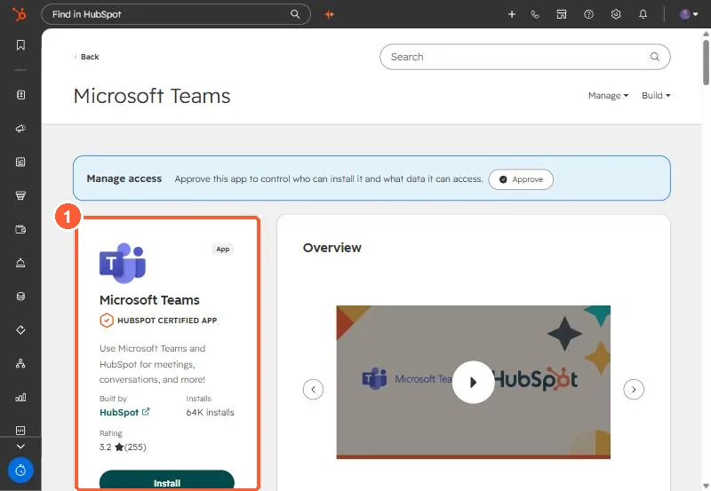

Short answer
Turn on Teams Phone logging in the Microsoft Teams app settings and calls log to the contact, its primary company, and associated deals. HubSpot's rules: users must be mapped to Teams, the contact must already exist, and the Teams number must match the contact's phone or mobile exactly, including country and area code. Calls take about 15 minutes on average, and up to 60, to appear. Click to call is set outside HubSpot: point the computer's TEL link handler at Microsoft Teams, then use the external link icon next to a phone number on the record.
1. Where Teams calling fits
An IT services client runs their phones on Microsoft Teams and wanted reps to click a number in HubSpot and have the call logged. HubSpot's own calling settings point you to a HubSpot number, a ported number, or a third-party integration. In my demo, the personal calling page also warns that registered numbers you add yourself "face increased risk of blocked calls and spam labeling from local carriers."


2. Turn on logging in the Teams app
After the app is connected, go to Connected Apps, click Microsoft Teams, then Settings and Teams Phone. Select For outbound calls and For inbound calls. HubSpot's rules for a call to log:
- The caller's HubSpot user is mapped to their Teams user.
- The contact already exists in HubSpot.
- The Teams number matches the contact's Phone number or Mobile phone number exactly, including country code and area code.
- Calls do not log to a contact whose email matches a HubSpot user.
- It takes about 15 minutes on average, and up to 60, for a call to appear.


3. Click to call is a computer setting
HubSpot says click to call and inbound routing are configured outside HubSpot. On Windows, set the default app for TEL links to Microsoft Teams. Then the external link icon next to a contact's phone number starts a Teams call. For inbound calls, Teams can open the contact record using a HubSpot redirect URL set in the Teams calls settings.
4. What this does not give you
HubSpot's article on logging Teams calls does not mention recordings or transcripts. If you need those, read getting Teams Phone recordings into HubSpot. On this client's rollout, each rep's Teams verification was tracked as a HubSpot task so nobody was missed.